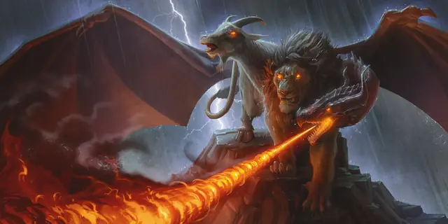

Химера
Chimera
Большое Чудовище, Хаотичное Злое

Класс Защиты 14 Инициатива +0 (10)
Хиты 114 (12к10 + 48)
Скорость 30 футов, Полёта 60 футов
| мод | спас | ||
|---|---|---|---|
| СИЛ | 19 | +4 | +4 |
| ЛОВ | 11 | +0 | +0 |
| ТЕЛ | 19 | +4 | +4 |
| мод | спас | ||
|---|---|---|---|
| ИНТ | 3 | −4 | −4 |
| МДР | 14 | +2 | +2 |
| ХАР | 10 | +0 | +0 |
Чувства Тёмное зрение 60 футов, пассивное Восприятие 18
Языки знает Драконий, но не говорит
Опасность 6 (2 300 опыта; БВ +3)
Действия
Мультиатака. Химера совершает одну атаку Тараном, одну атаку Укусом и одну атаку Когтями. Она может заменить атаку Когтями использованием Огненного дыхания, если оно доступно.
Укус. Бросок рукопашной атаки: +7, досягаемость 5 фт. Попадание: 11 (2к6 + 4) Колющего урона, или 18 (4к6 + 4) Колющего урона, если атака совершалась с Преимуществом.
Когти. Бросок рукопашной атаки: +7, досягаемость 5 фт. Попадание: 7 (1к6 + 4) Рубящего урона.
Таран. Бросок рукопашной атаки: +7, досягаемость 5 фт. Попадание: 10 (1к12 + 4) Дробящего урона. Если цель Среднего размера или меньше, она становится Опрокинутой.
Огненное дыхание (Перезарядка 5–6). Спасбросок Ловкости: Сл 15, каждое существо в 15-футовом Конусе. Провал: 31 (7к8) урона Огнём. Успех: Только половина урона.
Бонус мастерства +3
Среда обитания Горы, Луга, Холмы
Сокровища Любые
Химера
Многоглавая разорительница
Яростные и непредсказуемые, химеры сочетают в себе самые смертоносные черты львов, баранов и красных драконов. Устрашающие когти, сокрушительные рога, огненное дыхание — химеры это настоящие бури свирепости, движимые противоречивыми инстинктами трёх голов. Головы эти сходятся лишь в одном: в желании пожрать и выгнать соперников с суровых земель, где эти чудовища устраивают свои логова. Заметив добычу, химеры обычно обстреливают врагов огненным дыханием с воздуха, а затем приземляются, чтобы атаковать клыками, рогами и когтями.
Из-за драконьих инстинктов химеры — существа жадные. Они копят сокровища в своих пещерных логовах, не особо разбирая, что именно собирать: блестящие безделушки соседствуют с трофеями и костями недавних жертв. Смельчаки, желающие отвлечь химеру или временно её задобрить, могут попытаться сделать это, предложив ей сокровища и еду.